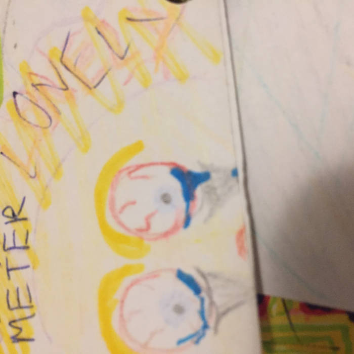
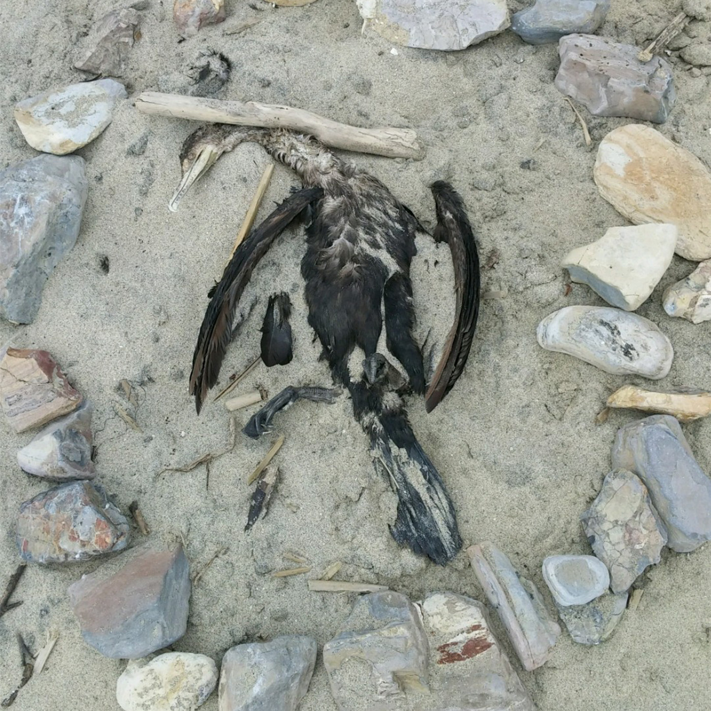

NO LOCALS

"I mean no disrespect when I say this, but it was the kinda fun that is reminiscent of when I was a toddler banging on pots and uttering loud incoherent verbal noise" -Anthony's friend
No Locals - MONOLITH (November 2017)

An EP by punk band No Locals. Recorded, mixed, and produced at the Monolith warehouse in Santa Ana, California.
Tools I used:
- -Digital Performer 7
- -1 SM57, and 2 SM58 microphones.
No Locals - Satanic Goose Ritual (July 2017)

An EP by punk band No Locals. Recorded, mixed, and produced at the Monolith warehouse in Santa Ana, California.
Tools I used:
- -Digital Performer 7
- -1 SM57, and 2 SM58 microphones.
No Plan - No Locals/Dental Plan (May 2017)

A split album by punk band No Locals and grindcore band Dental Plan. Recorded, mixed, and produced at the Monolith warehouse in Santa Ana, California.
Tools I used:
- -Digital Performer 7
- -1 SM57, and 4 SM58 microphones.